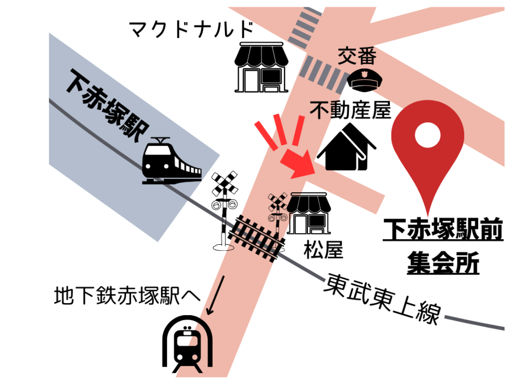
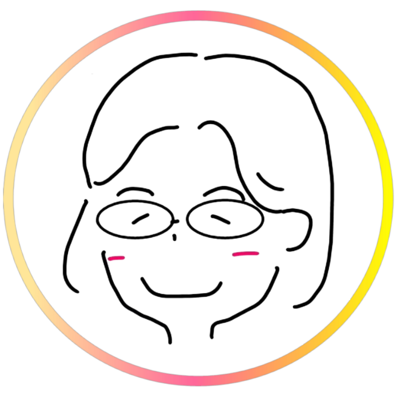

ころころもぐもぐ あかちゃんひろば
あかちゃんと一緒に、ほっとひと息つける場所。
「ころころもぐもぐ」は、
板橋・赤塚・練馬・光が丘エリアを中心に活動している、
親子のためのあかちゃんひろばです。
子育て中、
「誰かと少し話したいな」
「ゆっくり癒されたいな」
そんな気持ちになること、ありませんか？
ここでは、元保育士で子育て支援施設長の経験を持つスタッフと、現役保育園勤務・保育士資格を持つ栄養士が、あたたかくお迎えします。
あかちゃんと一緒に遊んだり、
子育てや離乳食のことを気軽に相談したり、
何もしなくても、ただ過ごすだけでも大丈夫。
つながりたい気持ちが、自然と叶う場所。
あかちゃんも、ママもパパも、
「ここが居場所」と思えるひろばを目指しています。
はじめての方も、どうぞ安心してお越しください。
イベント
ひろばだけではなく、様々なイベントも開催しています。
近日開催予定のイベントはInstagramを確認して下さい。
こちらに過去にあったイベントを紹介します。
■離乳食講座
一緒に食べて、栄養士さんに食べているところを見てもらう！
離乳食に関する疑問や不安にお答えします。
■ベビーマッサージ
マッサージで赤ちゃんの体が柔らかくなると？？
寝返りがしやすくなったり、寝つきが良くなったりするかも！
赤ちゃんの心地よさそうな表情を見るのも楽しみです。
■えほんdeコンサート
コンサートリーディングという絵本に音楽をのせた読み聞かせ。
絵本を読んでもらう子供たちの気持ちを感じてみませんか？大人の癒しの時間になります。
■パン会
赤塚のパン工房ブーランジェリーケンというパン屋さん。1個のパンが大きいんです。
みんなでシェアして、美味しいパンでランチ会！
...他にも季節のイベントなどたくさんあります！
イベント
ひろばだけではなく、様々なイベントも開催しています。
近日開催予定のイベントはInstagramを確認して下さい。
こちらに過去にあったイベントを紹介します。
離乳食講座
一緒に食べて、栄養士さんに食べているところを見てもらう！ 離乳食に関する疑問や不安にお答えします。
ベビーマッサージ
マッサージで赤ちゃんの体が柔らかくなると？？
寝返りがしやすくなったり、寝つきが良くなったりするかも！
赤ちゃんの心地よさそうな表情を見るのも楽しみです。
えほんdeコンサート
コンサートリーディングという絵本に音楽をのせた読み聞かせ。
絵本を読んでもらう子供たちの気持ちを感じてみませんか？大人の癒しの時間になります。
パン会
赤塚のパン工房ブーランジェリーケンというパン屋さん。1個のパンが大きいんです。
みんなでシェアして、美味しいパンでランチ会！
...他にも季節のイベントなどたくさんあります！
主な開催場所
場所を見つけては出張ひろばを開催していますが、
現在は以下の施設で開催していることが多いです。
■下赤塚駅前集会所
(GoogleMap)
東京都板橋区赤塚1丁目7-2
有楽町線・副都心線 地下鉄赤塚駅 徒歩6分
東武東上線 下赤塚駅 徒歩3分

開催日程と場所はInstagramを確認して下さい。
スタッフ紹介
なおさんってどんなひと？
（同スタッフらんさんの視点より）
栄養士、保育士の資格をもつ、現役保育園栄養士。
ひろばスタッフとして、預かりをしたり、コンサートリーディング（えほんdeコンサート）をやったり、外遊びのプレーパークスタッフとなったり、引き出しのいっぱいある方！
長年やっている「離乳食講座」。
気さくな人柄とこだわらないスタイルで、
お母さんたちが楽な気持ちで取り組めるようになったと評判です。
だけど、私は知っています。なおさんの講座には、確かな知識と裏付けがあることを。
単なるメニューの紹介ではなく、口への持っていき方、座り方、食材の形大きさ、と、月齢に合わせた色々な角度から食事を見直すきっかけをくれます。
離乳食に悩む方、ぜひ気軽に相談しに来てください。
" onclick="openModal(this)"> らんさん
らんさんってどんなひと？
（同スタッフなおこさんの視点より）
元保育園保育士であり、
子育てひろばのスタッフとして、預かりをしたり、外遊びひろばのスタッフとなったり、
とにかく子どもが大好きな、らんさん。
子どもにも、それが伝わるのか、一緒に遊ぶ子どもも楽しそう♡
そして長年一緒にいる私が1番すごいと思うのが、
今まで沢山の保育士さんを見てきたけど、
たぶん1番！
子どものケンカや、
イヤイヤ期の対応が上手！！
子育てのお手本になります。
子どもが人の物を取っちゃった！という時や、
「あれをやりたかったー！」
と泣いた時は、
まわりの目が気になって、
どう対応して良いか、
分からない時ありません？
一歩引いて、まるっと！らんさんにお任せを
" onclick="openModal(this)">
スケジュール ＆ お問い合わせ
ひろばやイベントの開催はInstagramをチェック！
お問い合わせは公式LINEへメッセージまたはInstagramのDMからどうぞ。